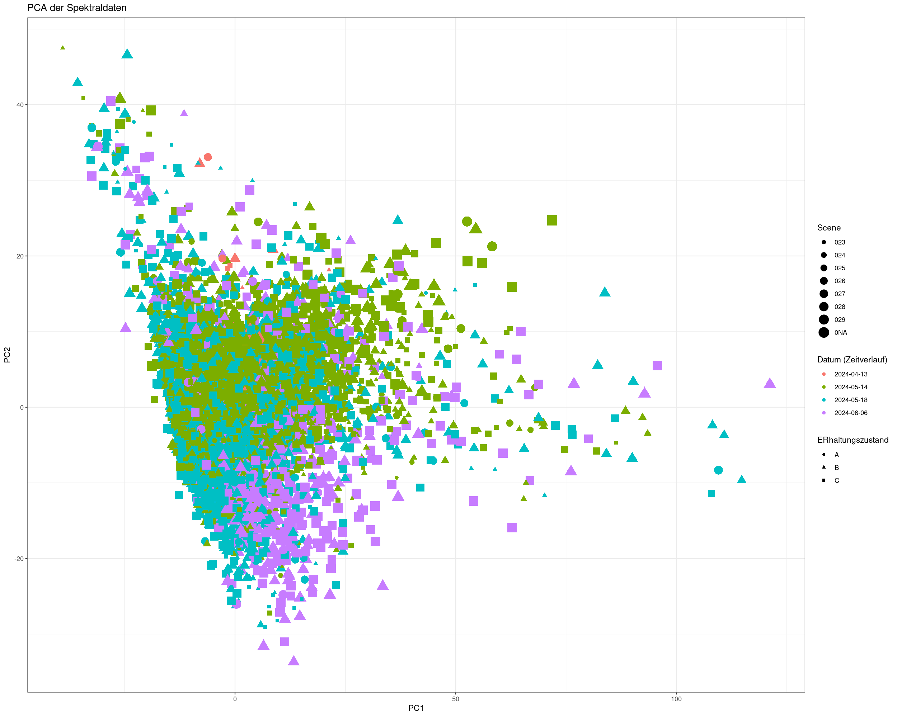
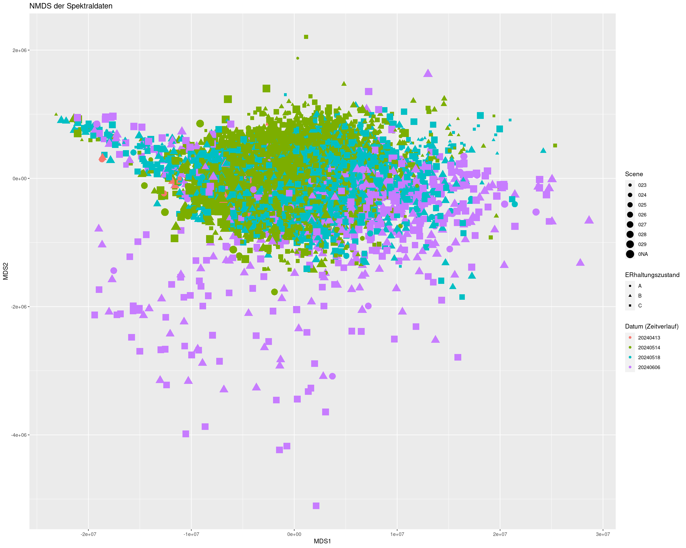

Hier die Darstellung nach Datum:
klicke hier: 3D PCA date1te Ableitungen:
klicke hier: 1te Ableitung: 3D PCA date2te Ableitungen:
klicke hier: 2te Ableitung: 3D PCA dateHier findest du außerdem die Darstellung nach Szenen:
klicke hier: 3D PCA scenePCA 2D
NMDS, transformiert nach YeoJohnson wegen negativen Werten, trymax wegen laufzeit nur 3
